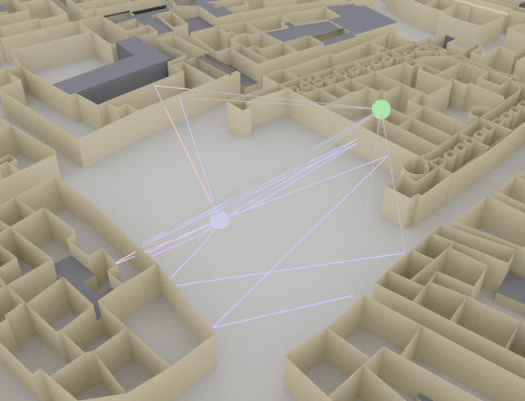

Path Solvers#
A path solver computes the propagation Paths
for a given Scene.
This includes tracing the paths and computing the corresponding channel
coefficients, delays, and angles of departure and arrival.
Sionna provides a path solver (PathSolver) which currently
supports specular reflections and diffuse reflections,
as well as refractions (or transmissions).
- class sionna.rt.PathSolver[source]#
Class implementing a path solver
A path solver computes propagation paths between the antennas of all transmitters and receivers in the a scene. For each propagation path \(i\), the corresponding channel coefficient \(a_i\) and delay \(\tau_i\), the angles of departure \((\theta_{\text{T},i}, \varphi_{\text{T},i})\) and arrival \((\theta_{\text{R},i}, \varphi_{\text{R},i})\), as well as the Doppler shifts \(f_{\Delta, i}\) are computed. For more detail, see (26). This path solver currently supports line-of-sigth, specular and diffuse reflection, as well as refraction. Paths can consist of any of these interaction types, in any order. Different propagation phenomena can be individually enabled/disabled.
This solver assumes that materials are thin enough that their effect on transmitted rays (i.e., rays that traverse the materials through double refraction) is negligible. Rays are traced without angular deflection, and objects like walls should be modeled as single flat surfaces having an attached radio material that accounts for their
thickness. This approach may be inaccurate for very thick objects. The figure below illustrates this model, where \(E_i\) is the incident electric field, \(E_r\) is the reflected field and \(E_t\) is the transmitted field. The Jones matrices, \(\mathbf{R}(d)\) and \(\mathbf{T}(d)\), represent the effects of reflection and transmission, respectively, and depend on the slab thickness, \(d\).
If synthetic arrays are used (
synthetic_arrayis True), transmitters and receivers are modelled as if they had a single antenna located at theirposition. The channel responses for each individual antenna of the arrays are then computed “synthetically” by applying appropriate phase shifts. This reduces the complexity significantly for large arrays. Time evolution of the channel coefficients can be simulated with usingcir()andcfr()methods of the returnedPathsobject.Example#
import sionna from sionna.rt import load_scene, Transmitter, Receiver, PlanarArray, PathSolver import mitsuba as mi # Load example scene scene = load_scene(sionna.rt.scene.munich) # Configure antenna array for all transmitters scene.tx_array = PlanarArray(num_rows=8, num_cols=2, vertical_spacing=0.7, horizontal_spacing=0.5, pattern="tr38901", polarization="VH") # Configure antenna array for all receivers scene.rx_array = PlanarArray(num_rows=1, num_cols=1, vertical_spacing=0.5, horizontal_spacing=0.5, pattern="dipole", polarization="cross") # Create transmitter tx = Transmitter(name="tx", position=mi.Point3f(8.5,21,27), orientation=mi.Point3f(0,0,0)) scene.add(tx) # Create a receiver rx = Receiver(name="rx", position=mi.Point3f(45,90,1.5), orientation=mi.Point3f(0,0,0)) scene.add(rx) # TX points towards RX tx.look_at(rx) # Compute paths solver = PathSolver() paths = solver(scene) # Open preview showing paths scene.preview(paths=paths, resolution=[1000,600], clip_at=15.)

- __call__(scene: sionna.rt.scene.Scene, max_depth: int = 3, max_num_paths_per_src: int = 1000000, samples_per_src: int = 1000000, synthetic_array: bool = True, los: bool = True, specular_reflection: bool = True, diffuse_reflection: bool = False, refraction: bool = True, diffraction: bool = False, edge_diffraction: bool = False, diffraction_lit_region: bool = True, seed: int = 42) sionna.rt.path_solvers.paths.Paths[source]#
Executes the solver
- Parameters:
scene (sionna.rt.scene.Scene) – Scene for which to compute paths
max_depth (int) – Maximum depth
max_num_paths_per_src (int) – Maximum number of paths per source
samples_per_src (int) – Number of samples per source
synthetic_array (bool) – If set to True (default), then the antenna arrays are applied synthetically
los (bool) – Enable line-of-sight paths
specular_reflection (bool) – Enables specular reflection
diffuse_reflection (bool) – Enables diffuse reflection
refraction (bool) – Enables refraction
diffraction (bool) – Enables diffraction
edge_diffraction (bool) – Enables diffraction on free floating edges
diffraction_lit_region (bool) – Enables diffraction in the lit region
seed (int) – Seed
- Returns:
Computed paths
- property loop_mode#
Get/set the Dr.Jit mode used to evaluate the loops that implement the solver. Should be one of “evaluated” or “symbolic”. Symbolic mode (default) is the fastest one but does not support automatic differentiation. For more details, see the corresponding Dr.Jit documentation.
- Type:
“evaluated” | “symbolic”